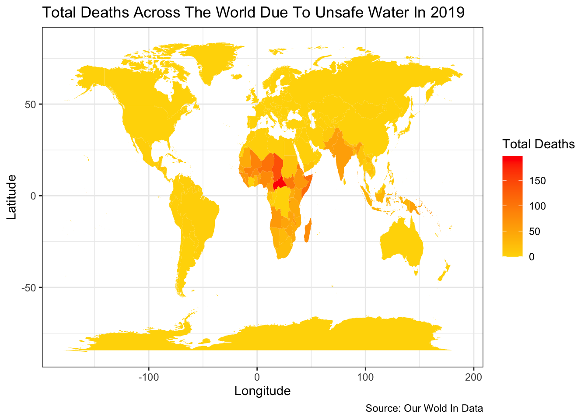
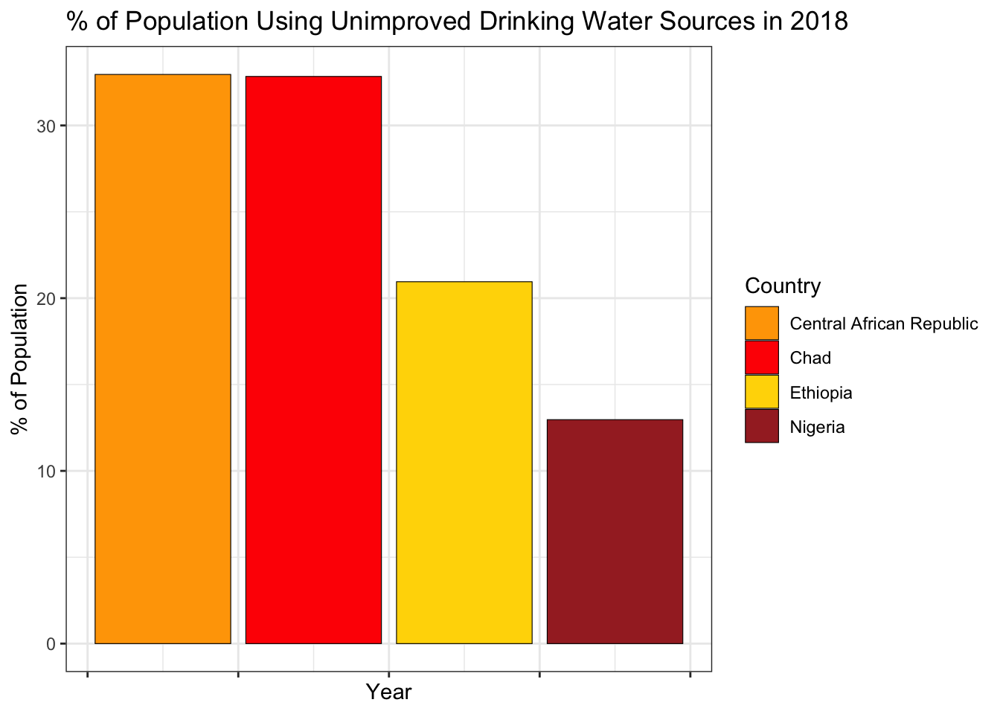
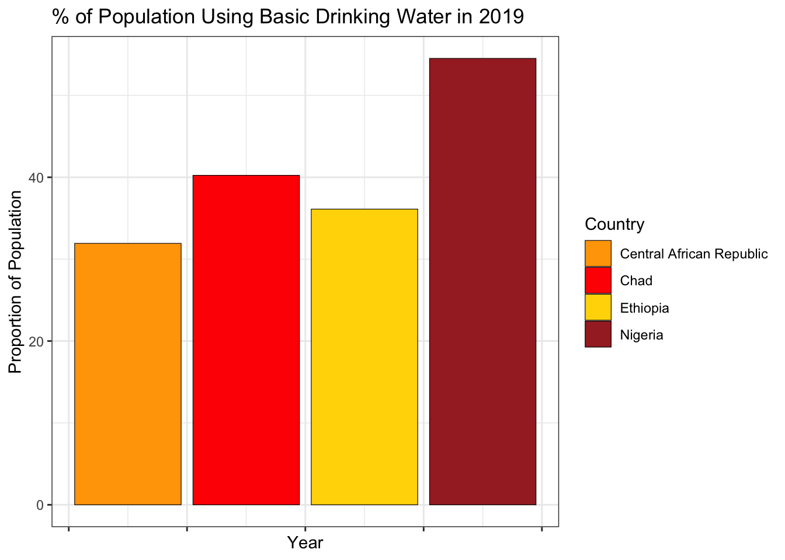
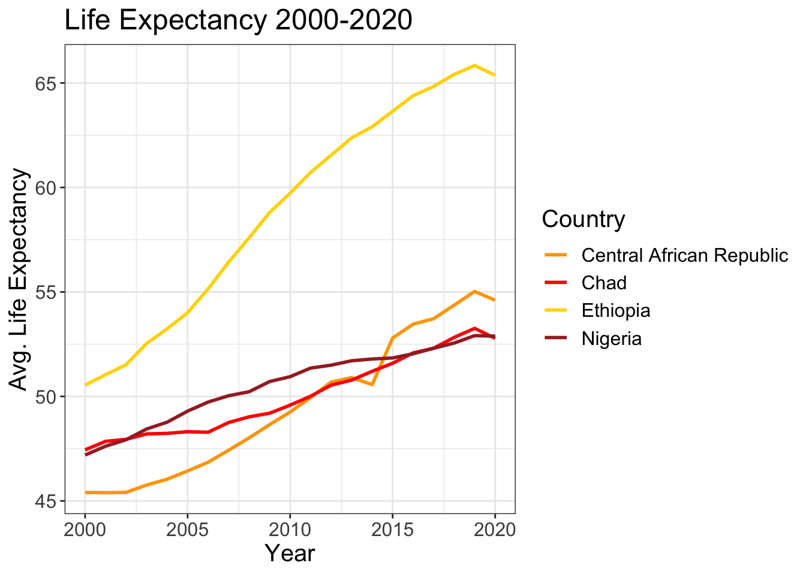
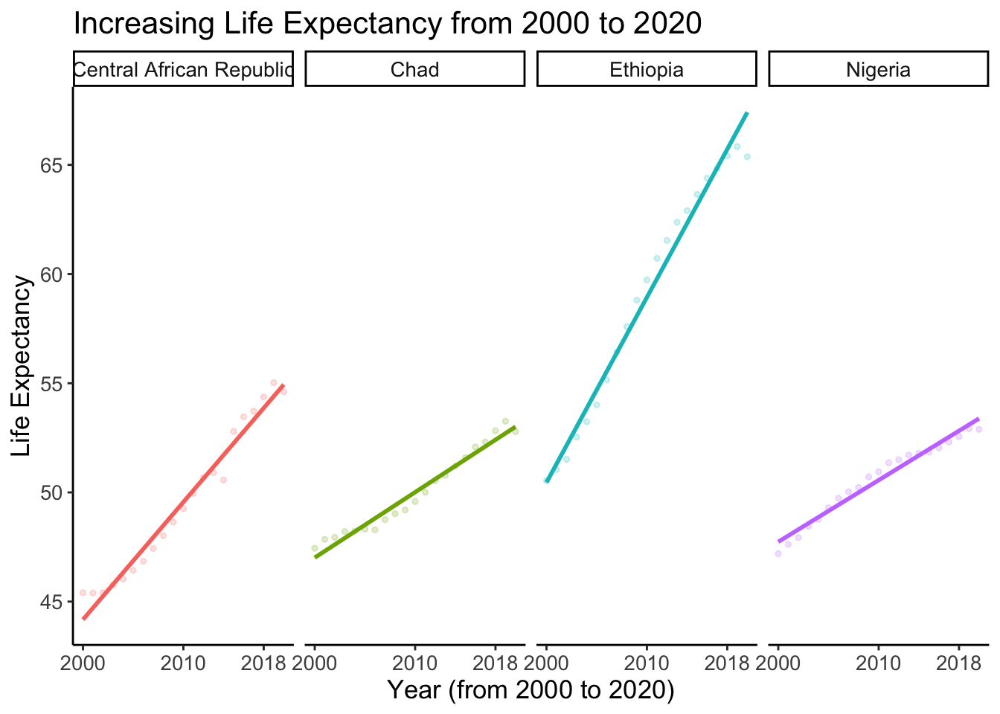

Improving Water Sources: Impact On Life Expectancy
How switching to clean water sources boosts average life expectancy
Consumption of unsafe water is a leading risk factor for death
Approximately 1.2 million individuals died prematurely in 2017 due to unsafe water consumption. This number is equivalent to the total number of global fatalities from road accidents and three times higher than the number of homicides that occurred in 2017 (Global Burden of Disease).
Billions of people will lack access to safe water in 2030 unless progress quadruples – WHO, UNICEF
Approximately 6% of the global population, or 474 million people, do not have access to an improved water source. The majority of these countries are located in Asia and Africa, where the number of deaths due to unsafe water is significantly higher compared to other parts of the world. This can be clearly seen in the above World Map. Therefore, as majority of the deaths are reported in the African region, let us analyse the top four countries in this report:
- Central African Republic
- Chad
- Ethiopia
- Nigeria
Proportion of Popultion Using Unimproved Drinking Water Source: 2018
The below bar chart presents data that indicates a significant portion of the population in the countries shown still relied on drinking water sources that are considered “unimproved” in 2018. This is a concerning trend as it has been identified as a major contributor to the high number of deaths in these regions.
Unimproved drinking water sources refer to any source of water that does not meet certain quality criteria, such as lack of protection from contamination, or insufficient treatment to make it safe for human consumption. Such sources of water are often found in rural or underprivileged areas with limited access to safe drinking water.
The fact that a majority of the population in these countries still relied on such sources of drinking water suggests that they may be at a higher risk of water-borne diseases and illnesses. This is a cause for concern as water-borne illnesses can lead to severe health problems and even death, particularly for vulnerable populations such as children and the elderly.
Note
Poor access to safe drinking water is the primary reason for high death rates in these regions.

Expand to learn more about where the data was colleted
Data in this report were collected from UNICEF, WHO and Our World Data
Transition Towards Improved Water Source: 2019
While the previous bar chart revealed that a majority of the population in the countries shown were still relying on unimproved drinking water sources in 2018, the following bar chart suggests that a significant number of people in these regions have transitioned towards using an improved water source. Specifically, the chart shows that these countries had a fairly significant portion of their population relying on basic drinking water in 2019, which is considered an improved source.
Basic drinking water refers to a source of water that is protected from contamination, but may not have sufficient treatment to make it entirely safe for human consumption.While basic drinking water sources are not ideal, they are still considered an improvement over unimproved sources.
Therefore, the data presented in the second bar chart suggests that while progress towards accessing safe drinking water sources is being made, there is still a need to improve the quality of water provided in these countries. By improving water sources, we can further reduce the risk of water-borne illnesses and improve overall public health outcomes.

Improving Water Source: Impact On Life Expectancy
The above charts demonstrate that these countries are moving towards using an improved water source. Through this transition there is also a noticeable increase in their average life expectancy over a period of time. This underscores the significant impact that having access to safe and high-quality drinking water can have on public health.
It is worth noting, however, that some countries have achieved better life expectancy outcomes by prioritizing the adoption of the safest drinking water source, which is safe managed drinking water. Ethiopia is an example of such a country, where the emphasis on shifting to a safe managed drinking water source has led to a better life expectancy outcome compared to the other three countries shown in the charts.
This emphasizes the importance of not only focusing on improving access to water sources but also ensuring that the water is managed and treated in a way that guarantees its safety for human consumption. Such measures can help to mitigate the risk of water-borne illnesses and improve overall public health outcomes.

Note
Safer the water source, better the average life expectancy
Positive Correlation: Life Expectancy 2000 - 2020
The data presented above demonstrates that the shift from using unimproved to improved sources of drinking water has had a positive impact on the average life expectancy in the countries shown.
To further illustrate this trend, a scatter plot has been included below. This plot shows the relationship between the years 2000 to 2020 and the corresponding life expectancy for each country. As can be seen from the plot, there is a clear positive correlation between the two variables for each country, indicating that as the years progress, the average life expectancy in these countries has also increased.
This scatter plot provides a clearer and more detailed picture of the positive impact that access to safe and improved drinking water sources can have on public health outcomes. It further emphasizes the importance of continued efforts to improve access to safe drinking water sources, as this can have a significant impact on improving overall public health outcomes and increasing life expectancy in these regions.

Conclusion
This report highlights the critical importance of access to safe and improved drinking water sources in promoting public health and increasing life expectancy. The visualizations show that the majority of the population in the countries shown still rely on unimproved drinking water sources, which has been identified as a significant contributor to the high number of deaths due to unsafe water in these regions.
However, the data also demonstrates that as these countries transition towards using improved sources of water, their average life expectancy has also increased over time.This positive correlation between access to improved water sources and life expectancy further emphasizes the importance of efforts to improve access to safe drinking water sources, particularly in underprivileged or rural areas.
Moreover, the data also highlights the need for a continued emphasis on not just improving access to safe drinking water sources, but also on ensuring that the water is managed and treated in a way that guarantees its safety for human consumption. This is crucial to mitigate the risk of water-borne illnesses and to ensure better public health outcomes in addition to reducing the deaths due to unsafe water.Therefore, this report highlights the need for continued efforts and investments towards improving access to safe drinking water sources, and underscore the significant positive impact that such improvements can have on public health outcomes and increasing life expectancy.